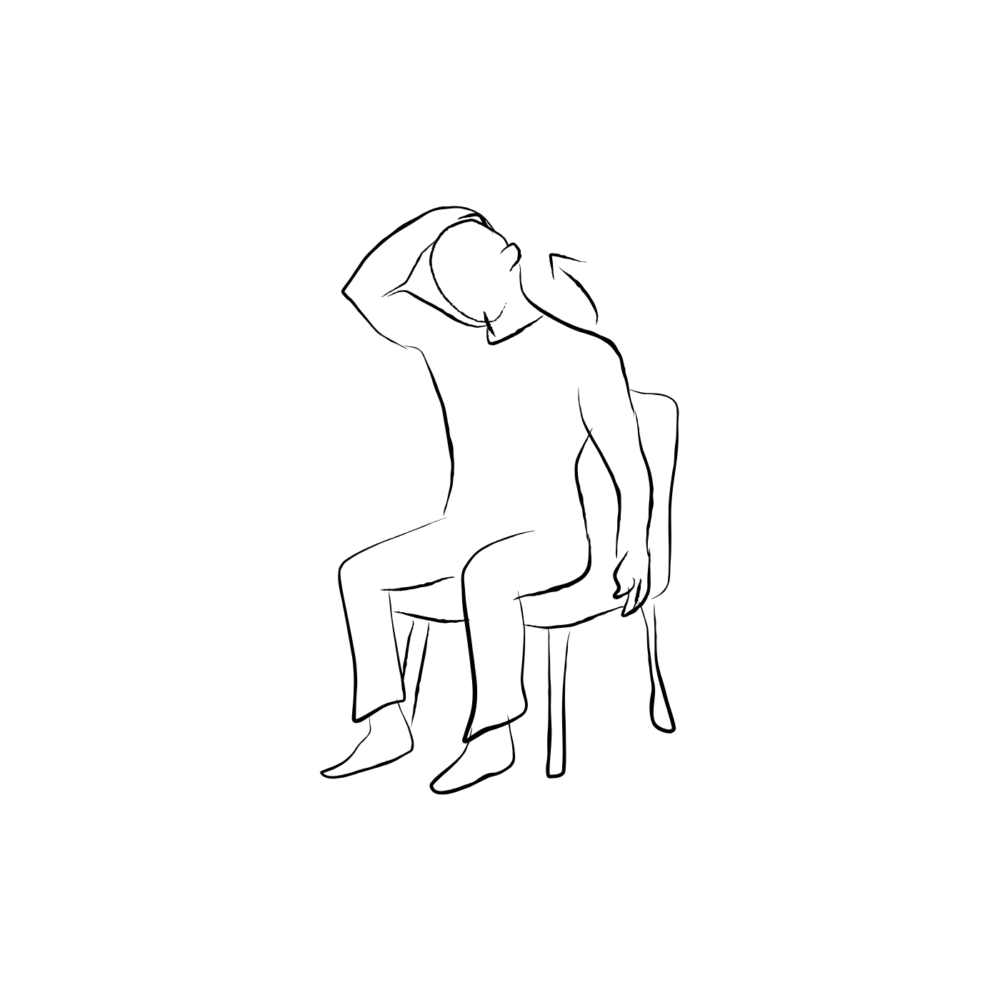
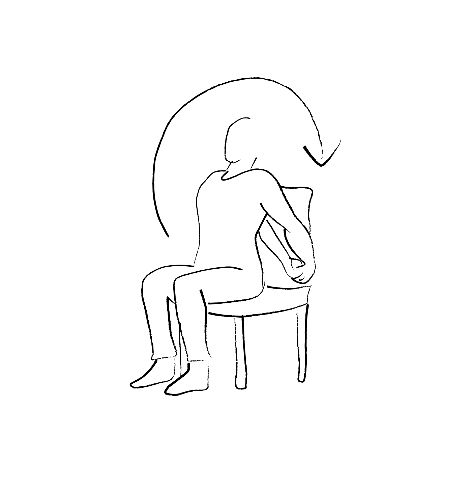
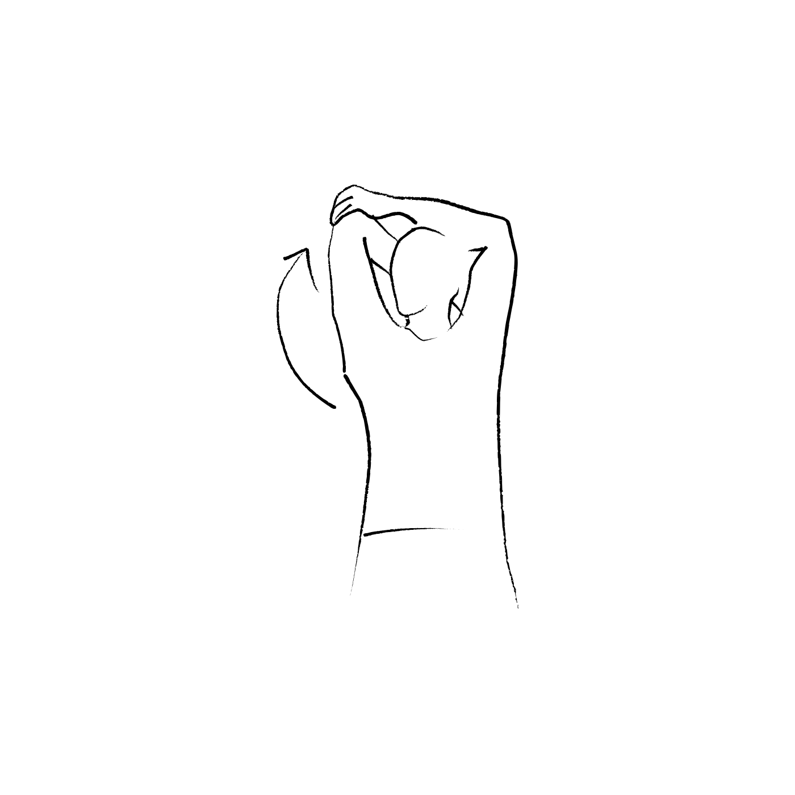
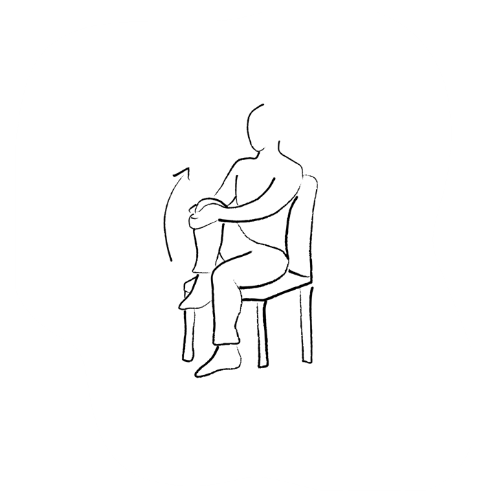

Blog
Stretching and Posture: Why Taking Breaks Matters
If you’ve ever spent hours at your desk and suddenly noticed that your neck is stiff, your shoulders are tense, or your back hurts, prolonged sitting may be part of the reason.
Your body is designed to move. Staying in the same position for long periods can put stress on your muscles and joints, affect your posture, and even impact circulation in your legs.
Why Does Sitting Too Long Cause Discomfort?
1. Your muscles stay in the same position
When you sit for a long time, your neck, shoulders, back, and hips remain in relatively fixed positions. Over time, this can cause muscle fatigue, stiffness, and discomfort.
2. Your posture can worsen
It’s easy to start with good posture and gradually lean toward your screen as you get tired or focused. Your head may move forward, your shoulders may round, and your back may become more curved.
3. Your circulation can be affected
Long periods of sitting can reduce blood flow in your legs and allow blood to pool in the lower legs. This can contribute to feelings of heaviness, swelling, or discomfort.
Getting up and moving regularly helps your leg muscles pump blood back toward your heart.
Common Symptoms
Prolonged sitting and poor posture can contribute to:
- Neck stiffness or pain
- Tight shoulders
- Upper- or lower-back discomfort
- Headaches related to muscle tension
- Stiff hips and legs
- A feeling of heaviness or discomfort in the legs
- General muscle fatigue
Simple Stretches and Movements
You don’t need a full workout every time you take a break. A few simple movements can help you get out of the same position.
Neck stretches
Slowly tilt your head toward one shoulder, hold for 15–30 seconds, then switch sides. You can also gently turn your head from side to side.


Shoulder rolls
Slowly roll your shoulders backward and downward several times, then reverse the direction.
Chest stretch
Place your forearms against a doorway and gently step forward until you feel a comfortable stretch across your chest.
Hip flexor stretch
Step one foot forward into a gentle lunge and shift your hips slightly forward. You should feel a stretch at the front of the hip of your back leg.


Stand and walk
Sometimes the best exercise is simply getting up. Walk around, get some water, or take a short walk outside. Even a few minutes of movement can help break up long periods of sitting.
Don’t Focus on Perfect Posture
Good posture matters, but you don’t need to hold one “perfect” position all day.
The most important thing is to change positions regularly.
Sit comfortably, keep your screen at a suitable height, support your back and feet, and most importantly, get up and move throughout the day.
How ReMemo Can Help
The hardest part isn’t knowing that you should take breaks.
It’s remembering to take them when you’re focused.
When you’re working, studying, or gaming, it’s easy to sit down for a little while and suddenly realize that hours have passed.
ReMemo reminds you to take breaks based on your actual screen time. When it’s time for a break, you can stand up, stretch, walk around, or simply change your position.
Instead of waiting until your neck or back starts hurting, ReMemo helps make regular movement part of your routine.
Give Your Body a Break
Sitting isn’t necessarily the problem. Staying in the same position for too long is.
Stand up. Stretch. Walk around. Change your position.
Your body will thank you for it.